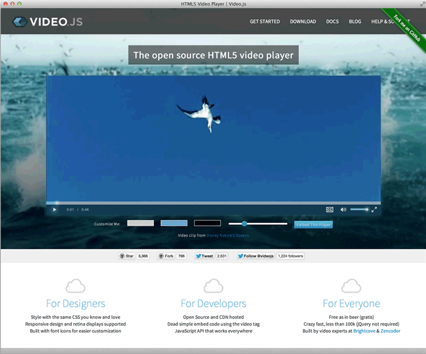

Buffering is a four-letter word
A presentation on web video performance

Created by
David LaPalomento :: Lead Player Engineer at Brightcove
Steve Heffernan :: Co-founder of Zencoder & Creator of Video.js
The goal of video performance is to remove waiting from the video viewing experience
Three areas where waiting may occur
- Player Loading
- Video File Loading
- Connection Management
Player Loading

Video File Loading

Connection Speed Management
Player Loading
Video Playback Technology
Video Tech Load-off
Waiting... |
Waiting... |
|
|
|
JavaScript: Why is it used?
- Embed code generation
- Custom features with HTML5
- API Access
JavaScript: Best Practices
- Combine
- Minify
- Host on a CDN
- Load before </body>*
...
</body>
</html>
JavaScript: Loading for Video Pages
- Load immediately after the video in the HTML
- Ajax load other major content pieces
- Use an async loader
Youtube Page Loading

Youtube Page Source

JavaScript: Async Loader
<HEAD>
<BODY>
myVideoPlayer.js
var _vidqCopy = _vidq || [];
_vidq = {
push: function(placeholder_id){
// Player Initialization
};
}
_vidqCopy.forEach(_vidq.push);
iFrames
- Popular delivery method
- Significant overhead especially on mobile devices
- Required for many embedding scenarios
Perception of Readiness
Your viewers will thank you for lying to them.
Run your own trials: github.com/brightcove/perception
Video File Loading
Video Player Settings
- Preload
- Autoplay
Loading video in HTML5 faster
- Tested: <video src> vs. <source> vs. el.src = ‘’
- Found: You can load video faster by calling load() sooner
Content Addressing
Static or Dynamic URLs
STATICBut you may have to make exceptions:
- Expiration
- Flexibility
Transfer
- CDN
-
Follow content-caching best practices but:
- "replays" are less common than repeat visitors
- don't expect caching from mobile devices
Video File Encoding
- Resolution
- Frame Rate
- Bit Rate
- Format
- MP4 Settings
Connection Speed Management
Starting Strategy
$$\frac{bitrate}{bandwidth} < 1 \implies spinner $$
Bitrate Selection
Encode multiple renditionsStrategy 1: Manual Selection
Let the viewer decide

Strategy 2: Automatic Selection
- Many analytics libraries record client bandwidth
window.performance- Bitrate recommendations
Strategy 3: Dynamic Selection
Adaptive Streaming
swap renditions during playback based on measured bandwidth
- Flash Media Server
- Psuedo-Streaming
- HTTP Live Streaming (HLS)
- MPEG-DASH
HLS is supported on iOS devices and newer Androids. HDS is supported in Flash.
Segmenting
- Rendition manifest lists bitrate variants
- Slice the video into many different segments
- Swap between variants at segment boundaries if bandwidth changes
- Add diagram
Fallbacks
Wait for canplaythrough
video.addEventListener('canplaythrough, function() {
video.play();
}, false);
Monitor buffering yourself:
progressvideo.buffered
Today
12,149 video requests
| Format | Count |
|---|---|
flv | 7508 |
mp4 | 3912 |
f4v | 286 |
m4v | 124 |
m3u8 | 101 |
avi | 89 |
mov | 70 |
ogg | 36 |
wmv | 13 |
webm | 8 |
ogv | 2 |
The Future
| Format | Count |
|---|---|
m3u8 | 13 |
mp4 | 10 |
webm | 1 |
The Future
- No javascript for the sake of compatibility
- Peer-to-peer video with webRTC
- Adaptive streaming in javascript with Media Sources
Slides
Not a coder? No problem. There's a fully-featured visual editor for authoring these, try it out at http://slid.es.
Point of View
Press ESC to enter the slide overview.
Hold down alt and click on any element to zoom in on it using zoom.js. Alt + click anywhere to zoom back out.
Works in Mobile Safari
Try it out! You can swipe through the slides and pinch your way to the overview.
Marvelous Unordered List
- No order here
- Or here
- Or here
- Or here
Fantastic Ordered List
- One is smaller than...
- Two is smaller than...
- Three!
Transition Styles
You can select from different transitions, like:
Cube -
Page -
Concave -
Zoom -
Linear -
Fade -
None -
Default
Themes
Reveal.js comes with a few themes built in:
Sky -
Beige -
Simple -
Serif -
Night -
Default
* Theme demos are loaded after the presentation which leads to flicker. In production you should load your theme in the <head> using a <link>.
Global State
Set data-state="something" on a slide and "something"
will be added as a class to the document element when the slide is open. This lets you
apply broader style changes, like switching the background.
"blackout"
"soothe"
Custom Events
Additionally custom events can be triggered on a per slide basis by binding to the data-state name.
Reveal.addEventListener( 'customevent', function() {
console.log( '"customevent" has fired' );
} );
Clever Quotes
These guys come in two forms, inline:
“The nice thing about standards is that there are so many to choose from”
and block:
“For years there has been a theory that millions of monkeys typing at random on millions of typewriters would reproduce the entire works of Shakespeare. The Internet has proven this theory to be untrue.”
Pretty Code
function linkify( selector ) {
if( supports3DTransforms ) {
var nodes = document.querySelectorAll( selector );
for( var i = 0, len = nodes.length; i < len; i++ ) {
var node = nodes[i];
if( !node.className ) ) {
node.className += ' roll';
}
};
}
}
Courtesy of highlight.js.
Intergalactic Interconnections
You can link between slides internally, like this.
Fragmented Views
Hit the next arrow...
... to step through ...
any type- of view
- fragments
Fragment Styles
There's a few styles of fragments, like:
grow
shrink
roll-in
fade-out
highlight-red
highlight-green
highlight-blue
Spectacular image!

Export to PDF
Presentations can be exported to PDF, below is an example that's been uploaded to SlideShare.
Take a Moment
Press b or period on your keyboard to enter the 'paused' mode. This mode is helpful when you want to take distracting slides off the screen during a presentation.